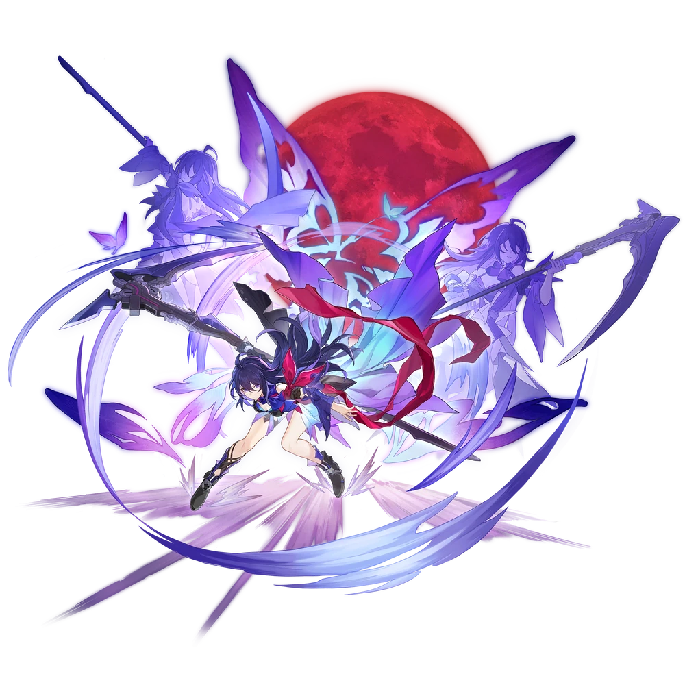
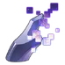

| Nome | Seele |
|---|---|
| Elemento | Quântico | Raridade | ✦ ✦ ✦ ✦ ✦ |
| Caminho | A Caça |
| Sexo | Fêmea |
| Especie | Humano |
| Facção | Belobog e Fogo-Vivo | Mundo | Jarilo-VI | Como obter | Borboleta na Ponta da Espada | Data de Lançamento | 2023-04-26 | Adicionado pela primeira vez | Versão 0.60 |
Ascensões e estatísticas
| Fase de Ascensão | Level | Base HP | Base ATK | Base DEF | Base SPD |
|---|---|---|---|---|---|
| 0✦ | 1/20 | 126 | 87 | 49 | 75 |
| 20/20 | 247 | 169 | 96 | 75 | |
| 1✦ | 20/30 | 297 | 204 | 116 | 75 |
| 30/30 | 361 | 248 | 141 | 75 | |
| 2✦ | 30/40 | 411 | 283 | 160 | 75 |
| 40/40 | 475 | 326 | 185 | 75 | |
| 3✦ | 40/50 | 525 | 361 | 205 | 75 |
| 50/50 | 589 | 405 | 230 | 75 | |
| 4✦ | 50/60 | 639 | 439 | 249 | 75 |
| 60/60 | 703 | 483 | 274 | 75 | |
| 5✦ | 60/70 | 753 | 518 | 294 | 75 |
| 70/70 | 817 | 561 | 319 | 75 | |
| 6✦ | 70/80 | 868 | 596 | 339 | 75 |
| 80/80 | 931 | 640 | 363 | 75 |
| Nível | Custo de Evolução | Materiais de Ascensão do Personagem | Materiais Necessários |
|---|---|---|---|
| 0 → 1 ✦ |  4,000 4,000 |
 5 5 |
|
| 1 → 2 ✦ | 8,000 |
10 |
|
| 2 → 3 ✦ | 16,000 |
3 |  6 6 |
| 3 → 4 ✦ | 40,000 |
7 | 9 |
| 4 → 5 ✦ | 80,000 |
20 |  6 6 |
| 5 → 6 ✦ | 160,000 |
35 | 9 |
Habilidades de combate
| Icone | Tipo | Nome | Descrição | Marcação | Energia | Resistência DMG |
|---|---|---|---|---|---|---|
| ATK básico | Paulada | Causa Quantum DMG igual a 50%–130% do ATK da Seele para um único inimigo. | Alvo único | Geração: 20 | 30 | |
| Skill | Lâmina Embainhada | Aumenta o SPD da Seele em 25% por 2 turno(s) e causa Quantum DMG igual a 110%–275% do ATK da Seele a um único inimigo. | Alvo único | Geração: 30 | 60 | |
| Ultimate | Borboleta Flurry | Seele entra no estado buffed e causa Quantum DMG igual a 255%–510% de seu ATK para um único inimigo. | Alvo único | Custo: 120 Geração: 5 | 90 | |
| Talento | Ressurgimento | Entra no estado buffed ao derrotar um inimigo com Basic ATK, Skill ou Ultimate, e recebe um turno extra . Enquanto estiver no estado buffado, o DMG dos ataques da Seele aumenta em 40%–100% por 1 turno(s). Inimigos derrotados no turno extra fornecido por "Resurgence" não ativarão outro "Resurgence". | Melhorar | |||
| Técnica | Ilusão Fantasma | Depois de usar sua Técnica, Seele ganha Furtividade por 20 segundo(s). Enquanto Stealth está ativo, Seele não pode ser detectado por inimigos. E ao entrar na batalha atacando os inimigos, a Seele entrará imediatamente no estado polido. | Melhorar |
Eidolons
| Icone | Nome da habilidade | Nivel | Descrição |
|---|---|---|---|
| Barra Extirpadora | 1 | Ao lidar com DMG a um inimigo cuja porcentagem de HP é de 80% ou menos, a taxa CRIT aumenta em 15%. | |
 |
Borboleta Dançante | 2 | O efeito SPD Boost da habilidade de Seele pode acumular até 2 vez(es). |
| Deslumbrante Tumulto | 3 | Habilidade Nv. +2, até um máximo de Lv. 15. Talento Nv. +2, até um máximo de Lv. 15. | |
| Fantasma Esvoaçante | 4 | Seele regenera 15 de energia quando derrota um inimigo. | |
| Estilhaços Perfurantes | 5 | Nível final +2, até um máximo de Lv. 15. ATK Básico Lv. +1, até um máximo de Lv. 10. | |
| Desordem Destruidora | 6 | Após Seele usar seu Ultimate, inflija o alvo inimigo com Butterfly Flurry por 1 turno(s). Inimigos que sofrem de Butterfly Flurry receberão Quantum DMG adicional igual a 15% do Ultimate DMG da Seele toda vez que forem atacados. Se o inimigo alvo for derrotado pelo Butterfly Flurry DMG desencadeado por ataques de outros aliados, o talento de Seele não será acionado. Quando Seele é derrubado, o Butterfly Flurry infligido aos inimigos será removido. |
Traços
| Custo Total (1 → 6 para rastreamento de ATK básico) | ||||||
|---|---|---|---|---|---|---|
| 240.000 |
6 |
7 |
7 |
| Custo total (1 → 10 para um rastreamento) | ||||||||
|---|---|---|---|---|---|---|---|---|
| 652.000 |
9 |
13 |
7 |
.webp) 3 3 |
 1 1 |